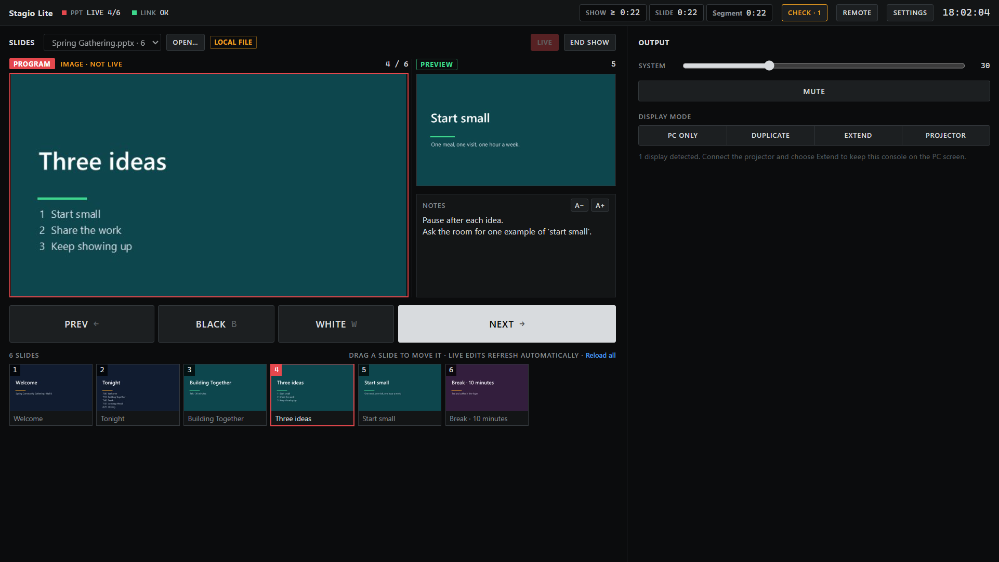
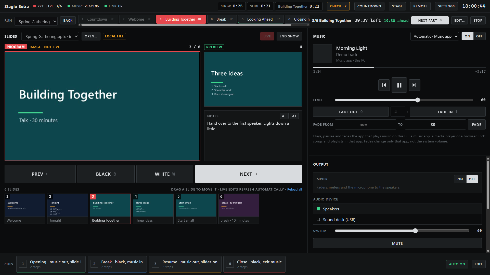
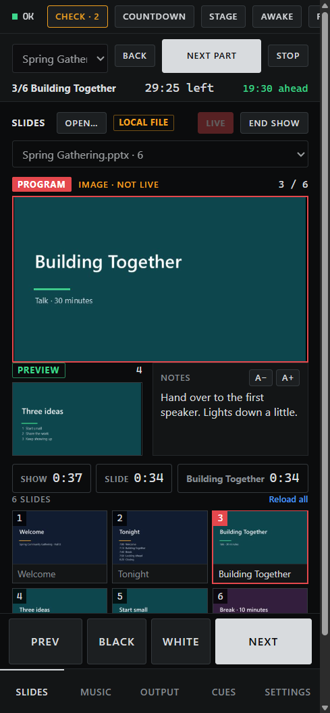
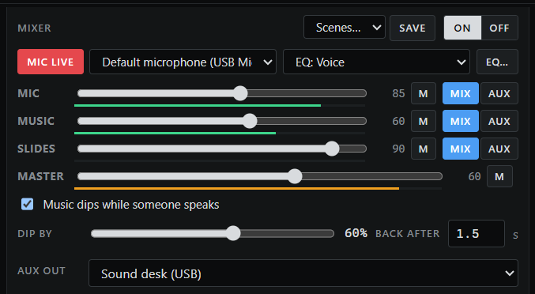
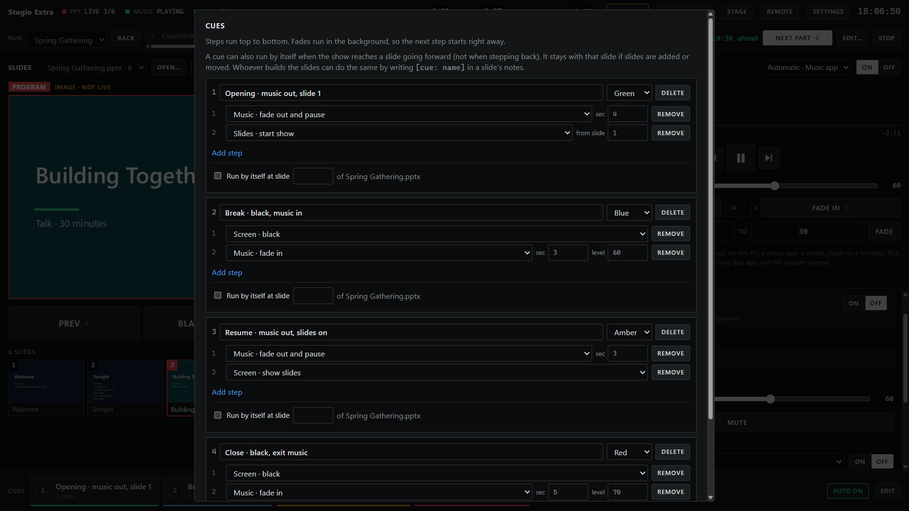
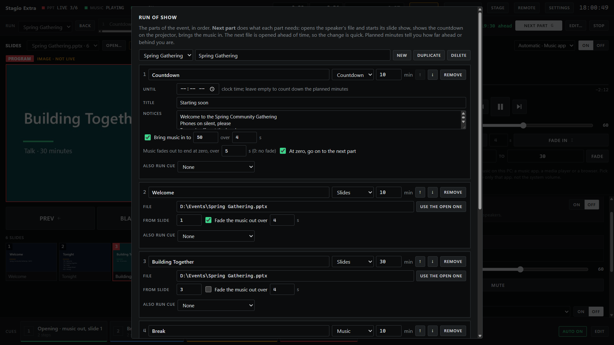
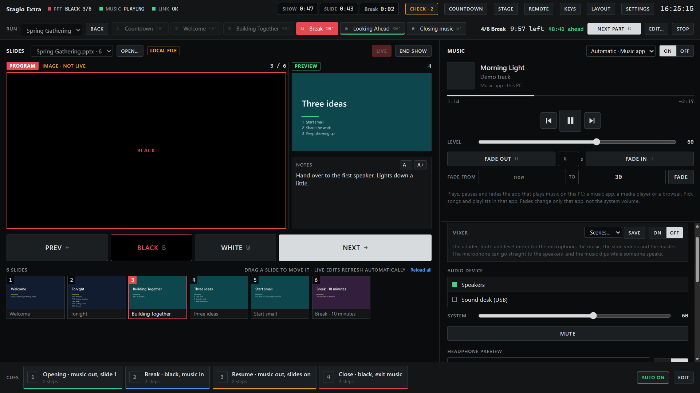
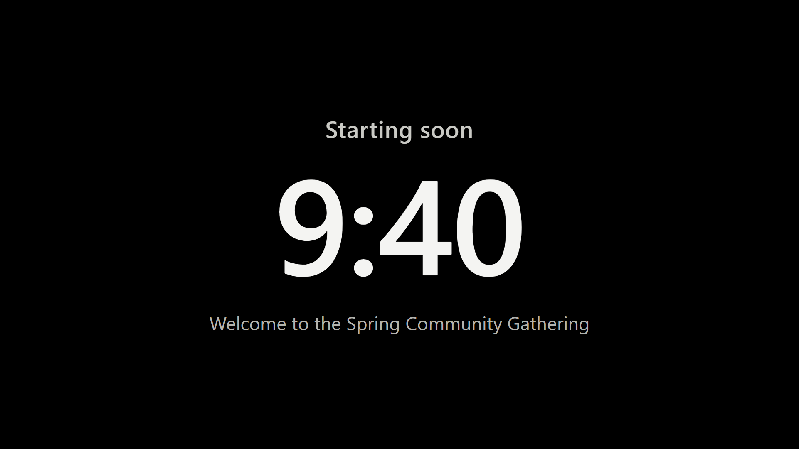
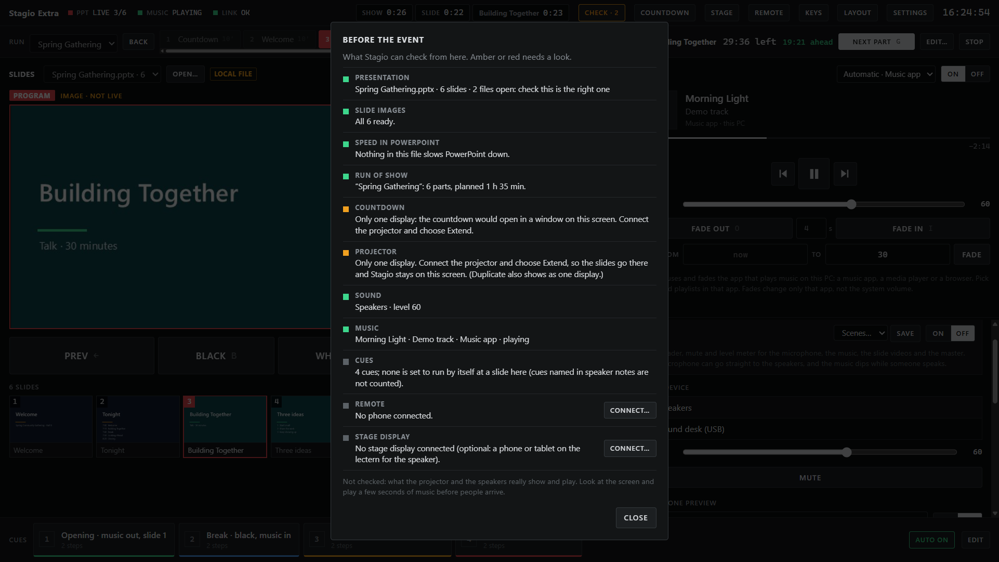

使用说明
用 Stagio 办一场活动
大部分活动里，一个人翻投影片，一个人放音乐，还有人管投影和音响。Stagio 把这些都集中在一个控台上，一个人就能掌控，在电脑上或用手机都可以。
它配合你本来就在用的 PowerPoint，和同一台电脑上你平常用来放音乐的程序。不需要账号，也不上云端。
约 1 分 47 秒，英文字幕，画面是 Windows 版。
没有找到。换个词试试，或按 Esc 清除搜索。
选哪个版本？
Stagio 有三个版本。每个版本只显示自己有的功能，用不到的功能不会出现，也不用设定。大的版本包含小的版本的全部功能。
| Lite | Standard | Extra | |
|---|---|---|---|
| 给谁用 | 自己讲自己投影片的人 | 一个人在后面控投影片、音乐和投影 | 负责整场活动的人 |
| 翻页、黑屏/白屏、备注、计时、真实缩略图、手机遥控、开场前检查 | 有 | 有 | 有 |
| 投影模式、系统音量和静音 | 有 | 有 | 有 |
| 音乐和淡入淡出、音频设备、Cue、开场倒数 | – | 有 | 有 |
| 混音、耳机预听 | – | 基本 | 完整 |
| 节目流程、讲台提示屏和控台讯息 | – | – | 有 |
| 第一次要设定的 | 打开文件，手机扫码 | 再在播放程序里放一次音乐、接投影机 | 再排节目流程 |
| 版本（Windows） | Beta 1.5.1 | Beta 1.6.1 | Beta 1.7.1 |
| 版本（Mac 测试版） | Beta 1.5.1 | Beta 1.5.1 | Beta 1.6.1 |
三个版本可以装在同一台电脑上，设置、PIN 和 Cue 共用，同一时间只开一个：打开另一个版本时，会问你要不要换过去。版本号每个版本、每个系统各自往上加。

安装
Windows
- 在下载页面下载你要的版本并打开。需要 Windows 10 或 11、PowerPoint 2016 或 Microsoft 365；放音乐用你平常用的播放程序就可以。
- 如果 Windows 显示“Windows 已保护你的电脑”：点“更多信息 → 仍要运行”。安装程序没有代码签名。
- 双击后没反应：防毒软件还在检查这个新文件，等几分钟再试。
- Windows 防火墙询问时，允许“专用网络”，手机才连得上。
- Stagio 以前叫 OneDesk。已经装了 OneDesk：装同一个版本的 Stagio（例如 OneDesk Extra → Stagio Extra）就会直接升级，设置、PIN、Cue 都保留；0.x 的 OneDesk 装 Standard。
Mac 测试版
- 在下载页面下载 Apple silicon 或 Intel 版，拖到“应用程序”。（苹果菜单 → 关于本机：写“芯片 Apple M…”的是 Apple silicon。）
- 第一次打开时，按住 Control 点它 → 打开（没有 Apple 签名）。如提示“已损坏”，在“终端”执行
xattr -cr "/Applications/Stagio Standard.app"（换成你装的版本）。 - macOS 问是否允许它控制 PowerPoint 和音乐程序（“音乐”或 Spotify）时，选“好”。Stagio 需要 macOS 13（Ventura）以上；投影画面实时截取需要 macOS 14 和“屏幕录制”权限。
- 还没有在 Mac 上配合真的 PowerPoint 测试过，正式使用前请先试一次。有问题时，Settings → About → Run Mac check 会整理出要回报的资料。
Mac 上没有：混音、耳机预听、Stagio Wi-Fi（改用手机热点）、加速慢文件（Mac 版 PowerPoint 不需要）、选放映屏幕和隐藏演示者视图。
主控台
在 PowerPoint 里打开投影片，或在 Stagio 点 Open…（最近的文件、贴上路径，或把文件拖进窗口）。按 Start 或 F5 开始放映。手边没有投影片？在空白的主控台上按 Try with sample slides，会打开 Stagio 自带的两份示范投影片（Extra 还会建好一个示范节目流程“Sample event”）。

1 2 3 4 5 6 7 8 9 10- 节目流程（Extra）：活动的每一段、剩余时间、快了还是慢了。详情
- 计时：放映已经多久、这一页多久、这一段多久（点两下重新计时）。
- Program：现在投影上显示的画面，直接从投影取得。
- Preview：下一页。
- 投影上那一页的备注；A− / A+ 调整这台设备上的字号。
- Prev、Black、White、Next。Black 和 White 让投影变黑或变白，再按一次回来。
- 所有页面：点一页就跳过去。缩略图是真实的页面，在 PowerPoint 里修改后会跟着更新，放映中也一样。隐藏的页面会变暗并标上 Hidden，放映时会跳过。在电脑上把一页拖到别的位置，就能在文件里调整顺序，之后按 Save file 存起来。
- 音乐：播放、切歌、音量和淡入淡出。详情
- 输出：混音、音频设备、系统音量、耳机预听、投影模式。音频设备、系统音量、投影模式。详情
- Cue：一个按钮执行一串动作。详情
左上角显示 PowerPoint 的状态（LIVE、BLACK、第几页）、音乐，以及和这台电脑的连线。上方只留活动中会用到的：Check、Countdown、Stage、Remote。
右上角 Settings 集中了事前要设定的东西，分成几页：Layout（版面：调整各区大小、隐藏用不到的区块、左右互换；每台电脑各自保存）、Projector（投影）、Sound（声音，Extra）、Keys（快捷键）、Screen（手机选项、备注字号）和 About。
很慢的文件：有些从 Canva 导出的文件，在 Windows 版 PowerPoint 里翻页很慢，原因是装饰文字用了电脑上没有的字体。Stagio 会显示 Slow in PowerPoint；按 Speed up 会把那些文字变成它们自己的图片，看起来一样，翻页变快。可以另存一份加速副本，也可以直接加速原文件（这台电脑会先保留一份之前的版本）。
手机就是遥控器
- 手机和电脑连同一个 Wi-Fi。
- 在电脑上点 Remote，用手机相机扫二维码（二维码 10 分钟内有效，窗口里会自动换新的）。或者输入显示的网址，再输入 6 位数 PIN。
- 加到主屏幕（步骤写在 Remote 窗口里），以后像 App 一样打开。
手机上是同一个控台：Program、Preview、备注、计时，以及四个翻页按钮，滚动时会固定在屏幕上。Awake 让屏幕保持亮着，Full 隐藏浏览器的工具栏。在 Settings → Screen 里可以让顶栏和按钮跟着滚动，也可以调整备注字号。
每支手机各有自己的钥匙。Remote 窗口列出已配对的手机和平板、哪些正在连线、各自最后一次使用的时间。按 Remove 立刻移除一台（离开的义工、遗失的手机）；按 New PIN and keys 换新的 PIN 和钥匙，所有手机、平板和提示屏都要重新连接。90 天没用过的设备会自动移除。连续输错 8 次 PIN，那支手机会被锁 5 分钟。
两支手机（或手机和电脑）同时按 Next，只会翻一页，不会翻两页。同一支手机快速连按两次，仍然翻两页。
没有 Wi-Fi？
- Stagio Wi-Fi：电脑开一个自己的网络。扫第一个二维码加入网络，再扫第二个打开 Stagio。iPhone 和 Android 都可以。
- 手机热点：打开手机的热点，让 Mac 连上，再扫码。
- 蓝牙（Android、Chrome）：蓝牙遥控不需要任何网络，可以翻页、黑屏/白屏、执行 Cue、控制音乐。会显示页码，但不显示投影片画面。

音乐和淡入淡出 Standard · Extra
Stagio 控制这台电脑上正在放音乐的程序。Windows 上是出现在系统媒体控制里的任何程序（按音量键时出现的那个小框）：音乐 App、媒体播放器或浏览器都可以。Mac 上是“音乐”App 或 Spotify。不需要任何账号或登录。
- Automatic（自动）跟着正在放音乐的程序，那个程序还在放时就不会换，浏览器里的影片不会把控制抢走。也可以在 Music 区上方的选单里固定选一个程序。
- 播放、暂停、切歌、点进度条跳到那个位置（程序支持的话）、音量和淡入淡出。歌和歌单在那个程序里选。
- 第一次用时，在播放程序里放一首歌（之后暂停也可以）。Stagio 会记住这个程序，下次会提供打开它的按钮。
Fade out 把音乐平滑地降下来并暂停，然后把音量恢复，下次播放时是原来的音量。Fade in 开始播放并把音量升上来。秒数框决定要多久。Fade from … to … 在你选的两个音量之间过渡，例如讲员开始讲话时从 60 降到 20。淡入淡出很平滑，没有杂音；新的淡入淡出会接手正在进行的那一个。只改变音乐程序的音量，不动系统音量。
音响和投影
- 音频设备（Standard、Extra）：在音控台、喇叭和耳机之间切换。系统音量和静音每个版本都有，音量会平滑过渡，不会突然跳动。
- 投影模式（所有版本）：仅电脑、复制、扩展、仅投影。复制和扩展（只用投影机时合上盖子）。建议用扩展（Extend）：投影片放到投影机上，Stagio 留在你的屏幕上。
- Show slides on（Settings → Projector）：PowerPoint 放映时用哪个屏幕（所有版本都有）。
- PowerPoint presenter view（Settings → Projector）：接上投影机时，PowerPoint 会在 Stagio 上面打开它自己的演示者视图。选 Hide 就不会出现（所有版本都有）。
混音 Standard 基本 · Extra 完整

没有 PA 时代替一部分。Mic live 让麦克风经过 Stagio 送到喇叭（大约晚 30 毫秒），有 EQ 预设（Voice、Clear、Warm）和在讲话空档关上的噪声门。麦克风、音乐、投影片影片、总音量各有推子、静音和音量表。有人讲话时音乐自动降低，停一下后回来。关着的时候，混音区缩成一行。
Extra 另外有 AUX 输出（每一行的 MIX / AUX 按钮）、完整的麦克风 EQ（EQ…：低切、低音、中音、高音、增益、噪声门）、音乐降多少和多快（Settings → Sound），以及可以存起来、手动或用 Cue 调出的混音场景。
麦克风不要靠近喇叭；出现啸叫时把麦克风推子拉下来或按 M。
耳机预听
打开后，音乐程序和 PowerPoint 留在喇叭上，其他程序的声音只从耳机出来，你可以先听下一首歌或下一段影片，观众听不到。选好耳机，按 On。插上耳机时会问要不要打开，拔掉时自动关闭。音乐停了以后，其他程序仍然留在耳机里，直到你关掉预听。
Extra 还可以选哪个设备算喇叭、哪些程序永远留在喇叭（Settings → Sound），逐个程序指定喇叭或耳机，Cue 里也能开关。耳机必须是 Windows 里独立的音响设备（USB、蓝牙或分开的输出）。
混音和耳机预听只有 Windows 版有；选放映屏幕和隐藏 PowerPoint 的演示者视图也是。
Cue Standard · Extra
一个 Cue 用一个按钮执行好几个步骤，例如“开场：音乐淡出，从第 1 页开始放映”，或“中场：黑屏，音乐淡入”。在 Cues → Edit 里编辑：音乐步骤（播放、暂停、淡入淡出、音量）、投影片步骤（开始、跳页、下一页、黑屏、白屏、结束）、输出步骤（音频设备、系统音量、投影模式，Extra 还有耳机预听和混音场景）和等待。淡入淡出在背景进行，所以下一个步骤会马上开始。

- 停止 Cue：在它执行中（按钮亮着）时点它，再点一次确认。后面的步骤不再执行，“等待”立刻结束，它开始的淡入淡出停在当时的音量。Cue 执行中再按，不会重复执行。
- 按 1–9 执行前 9 个 Cue。为了避免误按，可以在 Settings → Keys 里改成要按 Shift + 1–9。
- 翻到某一页时自动执行：放映往前翻到那一页时执行（往回翻不会）。前面插入或移动页面后，Cue 仍然跟着那一页。
- 做投影片的人也可以在那一页的备注里写
[cue: Break]（写 Cue 名称的开头即可），效果一样。 - Auto on / off 一次打开或关掉全部自动执行。
节目流程 Extra
把活动排成一段一段。活动中按 Next part（或键盘 G），Stagio 就做下一段需要的事。

| 类型 | 这一段开始时，Stagio 会…… |
|---|---|
| Slides | 打开那个文件，从你选的那一页开始放映；上一个文件的放映随后才结束，所以投影上不会露出桌面。可选：同时淡出音乐。 |
| Countdown | 在投影机上全屏显示倒数，倒数到某个时间，或倒数预定的分钟数。详情 |
| Music | 让投影变黑（如果正在放映），音乐淡入：中场、进场、散场用。 |
| Manual | 只计时，画面不变。 |
每一段也可以顺便执行一个 Cue。点 Edit… → New 会先给一个常见的活动流程，再改名、调整顺序、选好文件。下一次同样的活动按 Duplicate 复制一份，只要换文件。

- Run 栏显示每一段：红色是现在这一段，变淡的是已经过去的，底下有绿线的表示那一段的文件已经打开好了。
- 这一段的剩余时间超时会变琥珀色，超过 2 分钟变红色。旁边显示整场比预定快了或慢了多少。
- 下一段的文件会在这一段进行时先在后台打开（不开窗口），所以换讲员大约只要半秒。
- 直接点某一段时会先问 Go here?，误点不会切换。Back 回到上一段；Stop 结束流程（投影片不会被关掉）。
- 只有下一段真正开始了，流程才会往前走。下一段的文件打不开或放映开不起来时，流程停在投影上还在的那一段（计时照走），并说明原因；修好后再按一次就行。
- 找不到的文件会在 Run 栏和开场前检查里用红字标出来。Stagio 重开后，流程会停在原来那一段继续。
开场倒数 Standard · Extra

倒数会在投影机上全屏显示大大的倒数时间、一行标题（例如 Starting soon），以及在下方轮流显示的几句通知。可以倒数到某个时间（例如 10:00），或倒数几分钟。音乐可以淡出，到 0 时刚好结束。
按上方的 Countdown：选几分钟或某个时间、标题、通知，以及要不要让音乐淡出到 0 时结束，然后按 Start。到 0 后显示几秒 0:00 就关掉，后面的投影片就出现在投影上。
Extra 里倒数也可以是节目流程的一段：开始时音乐可以淡入，到 0 后自动进入下一段。
需要把投影机当作第二个屏幕，设成扩展（Extend）。只有一个屏幕时，倒数会以普通窗口显示在电脑上，方便检查，但不会盖住主控台。
讲台提示屏和控台讯息 Extra
把手机或平板放在讲台上，讲员或主持人就能看到投影上的这一页、下一页、放大的备注和剩余时间，还有你从控台发过去的讯息，例如“还有 5 分钟”。

- 连接：在控台点 Remote → Stage display，用讲员的手机或平板扫码。或者打开显示的网址，输入提示屏 PIN（和控台的 PIN 不同）。
- 只能看：提示屏不能翻页、不能控制音乐，也打不开控台，所以可以放心交给任何人。可以同时开好几个（讲员、主持人、乐手）。
- 顶部显示节目流程的这一段和剩余时间（超时变琥珀色，超过 2 分钟变红色），或这一段已经进行多久；还有现在的时间。Awake 让屏幕保持亮着，Full 隐藏浏览器的工具栏。连线中断时会用大字显示 Not connected，并自动重连。
- 发讯息：点控台右上角的 Stage。按一下现成的讯息（可以修改），或自己输入一句。讯息会先在提示屏上全屏闪出，之后留在顶部，直到你清除。讲员点一下，控台上就显示 Seen。实测讯息大约 0.1 秒就出现。
- 勾选 The speaker can change slides，提示屏会出现 Prev 和 Next 按钮（默认关闭）。
提示屏需要 Wi-Fi：场地的，或 Stagio 自己的或手机热点。蓝牙太慢，传不了画面。
开场前检查

右上角的 Check 列出 Stagio 能检查的项目：投影片、缩略图、慢文字、节目流程和它的文件、投影机、演示者视图、声音、音乐、Cue、已连接的手机和提示屏。琥珀色或红色的要看一下，很多项目旁边就有修正的按钮。它没办法检查的，是投影机和喇叭实际上显示和播放出来的效果：观众到场前，请看一下投影，放几秒音乐试试。
键盘
Stagio 窗口在最前面时有效。翻页笔也可以用。按 ? 显示这张表（Settings → Keys）。
| → Space Enter PgDn | 下一页 |
| ← PgUp Backspace | 上一页 |
| B 或 . | 黑屏开/关 |
| W 或 , | 白屏开/关 |
| F5 | 开始放映 |
| Home / End | 第一页 / 最后一页 |
| P · N | 音乐播放/暂停 · 下一首 |
| O · I | 淡出 · 淡入 |
| ↑ / ↓ | 音乐音量 ±5 |
| 1–9（或 Shift + 1–9） | 执行 Cue |
| G | 节目流程的下一段 |
| ? | 显示快捷键 |
常见问题
- 手机打不开 Stagio
- 手机必须连同一个 Wi-Fi（不能用流动数据或访客网络），电脑上的 Stagio 必须正在运行。有些路由器会把设备隔开（“AP 隔离”）。Windows 第一次问 Stagio 能不能使用网络时，要选允许。安全软件可能挡住 7300 端口。如果 macOS 防火墙问是否允许 Stagio 接受传入连接，选允许。聊天软件的扫码打不开时，改用手机相机，或手动输入网址和 PIN。还是不行：用 Stagio Wi-Fi 手机热点或蓝牙。
- “Windows 已保护你的电脑”，或安装程序没反应
- 点“更多信息 → 仍要运行”。如果完全没反应，是防毒软件还在检查新文件，等几分钟再试。
- Mac 打不开 Stagio，或提示“已损坏”
- 在“应用程序”里按住 Control 点它 → 打开。如提示“已损坏”，在“终端”执行
xattr -cr "/Applications/Stagio Standard.app"（换成你装的版本）。 - Stagio 控制不了 PowerPoint 或音乐，或没有投影画面
- 系统设置 → 隐私与安全性 → 自动化：允许 Stagio 控制 PowerPoint 和“音乐”或 Spotify。投影画面实时截取：“屏幕录制”，需要 macOS 14 以上。Settings → About → Run Mac check 会显示缺了什么。
- PowerPoint 自己的演示者视图盖住了 Stagio
- Settings → Projector → PowerPoint presenter view → Hide。下次开始放映时生效。
- 从电子邮件或下载打开的文件是只读的
- 它在 PowerPoint 的“受保护的视图”里。点琥珀色的 Protected View · enable editing 标签。
- 手机显示已经不再配对
- 它在 Remote 窗口里被移除了，或电脑换了新的 PIN 和钥匙。重新扫码或输入 PIN 即可。之前版本配对的手机共用一把旧钥匙，列表里显示为一项：那些手机都扫过新码后，就可以把它移除。
- 音乐没有反应
- 在播放程序（“音乐”或 Spotify）里放一首歌；之后 Stagio 就能控制它，暂停时也可以。好几个程序都在放时，在 Music 区上方的选单里选对的那个。
- 麦克风啸叫，或混音显示错误
- 把麦克风推子拉下来或按 M，麦克风不要靠近喇叭。如果混音开不起来，确认麦克风和喇叭都接好了、没有被别的程序独占，然后把混音关掉再打开。
- 回报问题
- 在 Stagio 电脑上，Settings → About → Save diagnostics 会存下一个文本文件，里面有版本、系统和 Stagio 日志的最后部分；PIN、钥匙和你的用户名都已去掉。回报时把它附在 GitHub 上。
- 换版本
- 打开另一个版本。正在运行的那个会问你要不要换过去；设置、PIN、Cue 和节目流程都会带过去。卸载其中一个版本，共用的设置会留给其他版本。
- 我的设置存在哪里？
%APPDATA%\OneDesk，沿用 Stagio 以前的名字。上一版会自动留作备份，文件损坏时会用它恢复。~/Library/Application Support/OneDesk，沿用 Stagio 以前的名字。